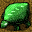

A. 地形の詳細 B. 開発計画について C. ミサイルについて D. 賞 E. 食料不足の時 F. 怪獣の種類
| 地形の詳細 | |
初級編で扱わなかった地形
海底基地 ミサイル基地と同様ですが、こちらは海に作ります。観光者からは海にしか見えません。浅瀬には作れません。 海底油田 海を掘削すると見つかることがあります。海底油田からは、毎ターン1000億もの収入があります。ただし、いつかは枯渇します。 記念碑 作るのに莫大な費用がかかりますが、普段は特に役に立ちません。国威掲揚に使って下さい。一応、怪獣には壊されない、森のように火災を防いでくれる、等のささやかなメリットはあります。 ハリボテ 見かけだけ防衛施設のハリボテです。安上がりです。これさえ並べておけば、みんなびびって攻撃してこないこと請け合いです。それ以外の機能は特にありません。 村、町、都市について
平地には、周囲に村、町、都市、農場のうち最低1つが存在すれば、毎ターン20%の確率で人口100人の 村が発生します。
村、町では、毎ターン100～1000人の人口が増えます。 誘致活動を行ったターンに限り、100～3000人の増加となります。それぞれ3000人、10000人に到達すると、町、都市へと発展します。
都市の人口は、自然には増えません。しかし、誘致活動を行ったターンは、100～300人だけ増加します。また、難民を受け入れた時には、都市も受け入れ先となります。都市の最大人口は20000人です。 難民に関しては、「ミサイルについて」のところで説明します。農場、工場、山(採掘場)
農場、工場では、人が働くことができます。山も、採掘場を設置することにより人が働けるようになります。
農場で働ける人数は、最初に農場整備を行った時点では10000人ですが、同じ場所に繰り返し農場整備を行うと、1回につき2000人ずつ規模が大きくなります。最大で50000人まで働けるようになります。
工場も同様ですが、工場建設1回につき10000人分増設されます。最大で100000人まで働けるようにできます。
山は、採掘場整備1回につき5000人分で、最大200000人まで働けるようにできます。
同じ場所で何ターンも連続して農場整備等を行う時は、数量を指定すると便利です。指定したターン数の間、コマンドが繰り返されます。防衛施設
すでに防衛施設が存在する場所に、もう一度防衛施設建設を行うと、その防衛施設を自爆させることができます。これにより、もしも周囲2ヘックス以内に怪獣がいた場合は、一撃で葬ることができます(もちろん島にも多大な被害がでます)。ただし、自爆よりも怪獣が動く方が先の場合もあるので注意。また、意図的に自爆させなくても、怪獣が防衛施設に達すれば自動的に自爆します。
▲Top
| 開発計画について | |
初級編で扱わなかった開発計画
開発計画 指定する要素 説明 地ならし(100億円) 座標 地ならしは、整地同様荒地などを平地にします。整地との違いは、地ならしを行ってもターンが進行しない事と、値段が高い事だけです。 掘削(200億円) 座標・(数量) 陸地を掘削し、浅瀬にします。浅瀬を掘削すると、海になります。また、海で実施すると、海底油田が見つかる事があります。この場合は、使用する予算を決めるために数量を指定して下さい。数量1につき、予算200億円で、油田発見率は1%アップします。 海底基地建設(8000億円) 座標 海に海底基地を作ります。 記念碑建造(9999億円) 座標・(目標) 平地に記念碑を作ります。また、すでに記念碑のある所に実施すると、その記念碑が目標で設定した島に飛んでいきます。 ハリボテ設置(1億円) 座標 平地にハリボテを設置します。 怪獣派遣(3000億円) 目標 目標で設定した島に、人造怪獣を送り込みます。 誘致活動(1000億円) なし 誘致活動を行ったターンは、人口が増えやすくなります。 建設系の計画
植林、農場整備、工場建設、ミサイル基地建設、防衛施設建設など、「平地に何か作る」系の計画は、実際には平地以外にも、村、町、都市 に直接実行することが可能です (村が勝手に発生して予定が狂うのを防ぐための便宜上のルールです)。埋め立て
埋め立てが行えるのは、陸に隣接した海に限られます。
普通の海だった場合は、埋め立てにより浅瀬になります。
浅瀬だった場合は、埋め立てにより荒地になります。と同時に、もし隣接している海(浅瀬含む)が3ヘックス以内であれば、それらのヘックスが 浅瀬になります。掘削
掘削は、山を荒地に、陸地全般を浅瀬に、浅瀬を海にすることができます。
さらに、海を掘削することで、油田を探すことが出来ます。この場合は、数量指定が関係します。費用は数量に比例しますが、 油田が見つかる確率も数量に比例して高くなります(数量×1%です)。
一度油田が見つかったら、その油田からは毎ターン1000億円の収益があります。ただし、毎ターン4%の確率で枯渇します。もちろん、枯渇する前にミサイルや災害で破壊されてしまったらそこまでです。
▲Top
| ミサイルについて | |
威力
ミサイルは、原則として着弾した場所を一撃で荒地にします (陸地破壊弾の場合は浅瀬にします)。ただし、次のような例外があります。海、山、海底基地に命中
海(浅瀬含む)、山、海底基地には、通常ミサイルが落ちても被害がありません。ただし、陸地破壊弾の場合は、浅瀬なら普通の海に、海底基地も海に、 山を荒地にしてしまいます。怪獣に命中
怪獣は体力をもっており、ミサイルが命中する度に体力が1減ります。体力が0になると倒せます。
ただし、陸地破壊弾の場合は、怪獣のいる陸地ごと水没させるので、一撃で倒せます。海底油田に命中
荒地ではなく海になります。難民
ミサイルが村、町、都市に命中すると、当然相手国の人口が減ります。そうすると、なぜかその半数程度の難民が ミサイルを撃った国に出現します。 難民は、平地、村、町、都市が適当に受け入れます(ようするに人口が増えます)。受け入れは、平地に1000人程度の村ができる、または村、町、都市の人口が最大5000人増える、という形でなされます。
なお、陸地破壊弾やSTミサイルを撃った場合には、なぜか難民は発生しません。レベルと経験値
ミサイル基地、および海底基地にはレベルがあります。初級編では「ミサイル発射数は基地一つにつき一発」としましたが、実際にはレベルが上がると一基で何発も撃てるようになります。具体的には、レベルの数だけミサイルを同時発射できます。最初はレベル1なわけです。
発射したミサイルが村、町、都市に命中すると、その人口に応じて(2000人で1ポイント)経験値が入ります。 2000人以下の村に命中しても無効です。また、怪獣をミサイルで仕留めた場合も経験値が入ります(陸地破壊弾ではだめです)。
レベルの上がり方は次の通りです。
レベル ミサイル基地の経験値 海底基地の経験値 1 0 0 2 20 50 3 60 200 4 120 - 5 200 - 着弾点
ミサイルは、複数発射する場合でも同一の地点を目標に発射されます。目標が同一の地点と言っても、各ミサイルは 誤差範囲内のどこに落ちるかわからないので、着弾地点は1発ごとに違います。もちろん、同じ場所に落ちて無駄撃ちになる事もあります。
誤差が1ヘックスのミサイルは、目標地点及び隣接する6ヘックス、合計7ヘックス内のどこかに落ちます。誤差が2ヘックスのミサイルは、それに加えてさらに周囲の12ヘックスを合わせた、合計19ヘックス内のどこかに落ちます。
例を示すと、下の図において中央の都市を狙った場合、誤差1ヘックスのミサイルであれば都市または平地のどこかに落ちます。
誤差2ヘックスのミサイルであれば、都市または平地または荒地のどこかに落ちます。
範囲内であれば、どのヘックスに落ちる可能性も均等です。目標中央に落ちやすい、という事はありません。また、端の方を狙った場合、地図外に落ちることもあります。
▲Top
| 賞 | |
目標を達成することで、賞がもらえます。賞を獲得すると、島の名前の横にアイコンが付きます。以下のような賞があります。
賞の名前 アイコン 条件 ターン杯 100の倍数のターンにおいて、人口ランキングトップだった島に贈られます。100ターン杯、200ターン杯...と続いていきます。 繁栄賞 人口が30万人に到達すると獲得です。 超繁栄賞 同50万人です。 究極繁栄賞 同100万人です。 平和賞 一度に難民を2万人受け入れると獲得です。 超平和賞 同5万人です。 究極平和賞 同8万人です。 災難賞 前ターン比で、人口が5万人減少すると獲得です。 超災難賞 同10万人です。 究極災難賞 同20万人です。
より上位の賞は、順番にしか取れません。つまり、平和賞を取る前に超平和賞を取ることはできません。
▲Top
| 食料不足の時 | |
食料が少しでも足りないと、食料不足となります。こうなると、通常なら人口が自然増加するところを、村、町、都市で人口が毎ターン100～3000人、自然減少してしまいます。
また、農場や工場、ミサイル基地、防衛施設などが壊されます。
▲Top
| 怪獣の種類 | |
怪獣には、以下のような種類があります。
名前 外見 体力 経験値
/
残骸の値段 最低出現人口 備考 いのら 1～2 5/400 10万人 - サンジラ 1～2 7/500 10万人 奇数ターンは硬化、ミサイル攻撃無効 レッドいのら 3～4 12/1000 25万人 - ダークいのら 2～3 15/800 25万人 1ターンに2ヘックス移動する場合あり いのらゴースト 1 10/300 25万人 1ターンに何ヘックス移動するか不明 クジラ  4～5 20/1500 40万人 偶数ターンは硬化、ミサイル攻撃無効 キングいのら 5～6 30/2000 40万人 - メカいのら 2 5/0 - 人造怪獣
▲Top
Copyright© Hiroki Tokuoka.
Copyright© 2001 Yasuyuki Kishida.